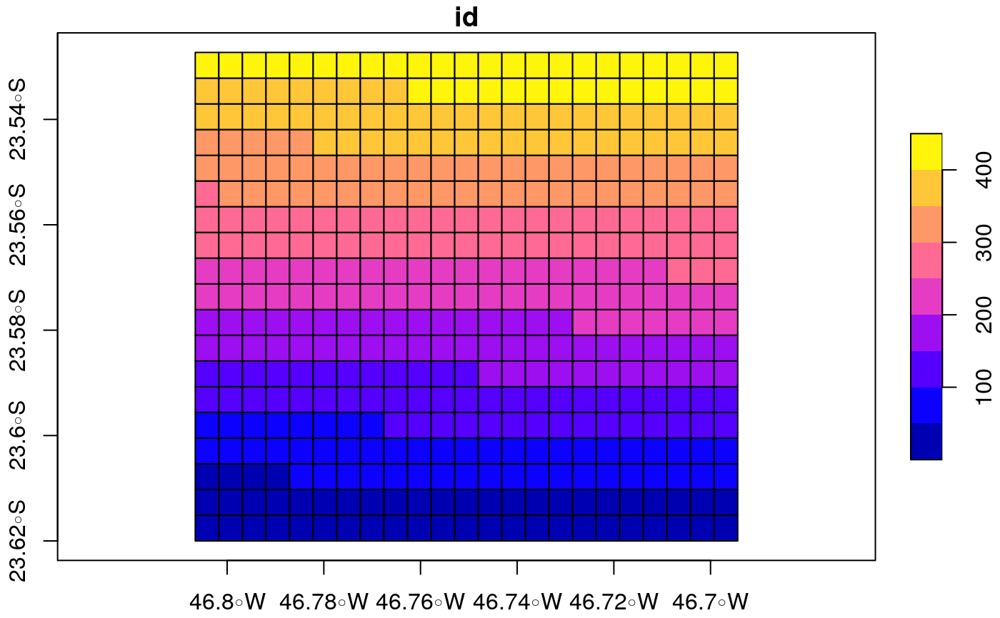
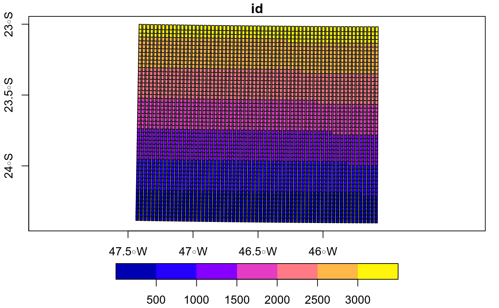

make_grid.Rdmake_grid creates a SpatialGridDataFrame. The spatial
reference is taken from the spatial object.
make_grid(spobj, width, height = width, polygon, crs = 4326, ...)
| spobj | A spatial object of class sp or sf or a Character. When it is a character, it is assumed that it is a path to wrfinput file to create a grid class 'sf' based on this file. This is done by running eixport::wrf_grid. |
|---|---|
| width | Width of grid cell. It is recommended to use projected values. |
| height | Height of grid cell. |
| polygon | Deprecated! |
| crs | coordinate reference system in numeric format from http://spatialreference.org/ to transform/project spatial data using sf::st_transform |
| ... | ignored |
A grid of polygons class 'sf'
{ data(net) grid <- make_grid(net, width = 0.5/102.47) #500 mts plot(grid, axes = TRUE) #class sf wrf <- paste(system.file("extdata", package = "eixport"), "/wrfinput_d02", sep="") gwrf <- make_grid(wrf) plot(gwrf, axes = TRUE) }#> Number of lon points: 23 #> Number of lat points: 19 #>#>#> using grid info from: /home/sergio/R/x86_64-pc-linux-gnu-library/3.4/eixport/extdata/wrfinput_d02 #> Number of lat points 51 #> Number of lon points 63